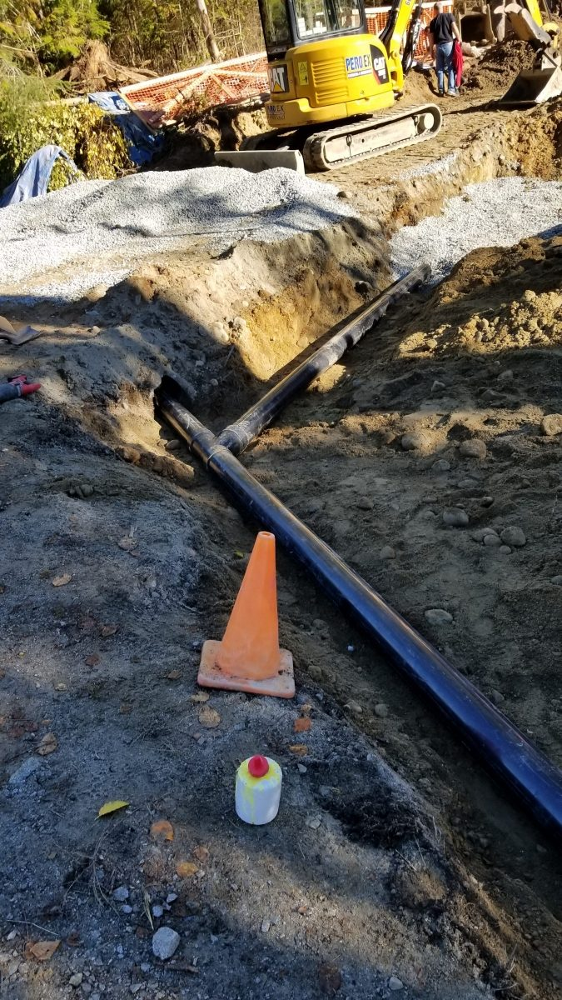

“My water main burst on a Sunday and they came out to shut off the water. Next day they came back and replaced my water main. Very professional.”
Repair · replace
Water main leaks, found and replaced
Underground water service leak detection and replacement for Surrey, Langley, Maple Ridge, Mission and Abbotsford.
- ★ 5.0 on Google · 16 reviews
- Open 24 hours
- 12-month guarantee
- TSBC LGA0208910

The water main is the line from the city shut-off at the property line to your house. When it leaks you usually don't see water: you see a soggy strip of lawn, hear water running when nothing is on, or get a water bill that doubled. Older galvanized and copper services in Surrey and the Fraser Valley fail from the outside in.
We confirm the leak with a meter test and acoustic listening before anyone digs. Then we replace the service with new poly (PE) line, a new main shut-off valve inside, and a proper pressure-reducing valve if your street pressure is high. Most residential mains are done in a day, and we coordinate the city-side shut-off and inspection.
If your main shut-off valve is seized or weeping, replace it before you need it in an emergency.
Need this sorted today?
Call for an honest ETA, or text a photo and get a price back.
- Licensed & insuredTechnical Safety BC LGA0208910
- Upfront pricingPrice agreed before work starts
- 12-month guaranteeSame problem comes back, so do we
- Family-owned, SurreyOver a decade in the trade
From Google
What customers said about this kind of job.
“Waller Plumbing was the only 24/7 company that answered their phone and didn't ask for $400 just to show up before even assessing the job. When he turned the main water off, he double-checked that it was actually off rather than assuming. Affordable rates are a bonus.”
“We've had Adam come in many times for different jobs and he has always been super friendly and courteous. Very knowledgeable. He does an awesome job every time.”
Questions
Good to know.
How do I know if my water main is leaking?
Turn off everything in the house and watch the water meter. If it still moves, water is going somewhere between the meter and the house.
How long does a water main replacement take?
Typically one day for a standard residential service. We shut your water off in the morning and have it back on by evening.
Will it destroy my yard?
We dig the narrowest trench we can and use directional boring under driveways and mature landscaping where it makes sense.
Related
Often on the same visit.
Talk to Adam now.
One number, day or night: 778 898 6189.